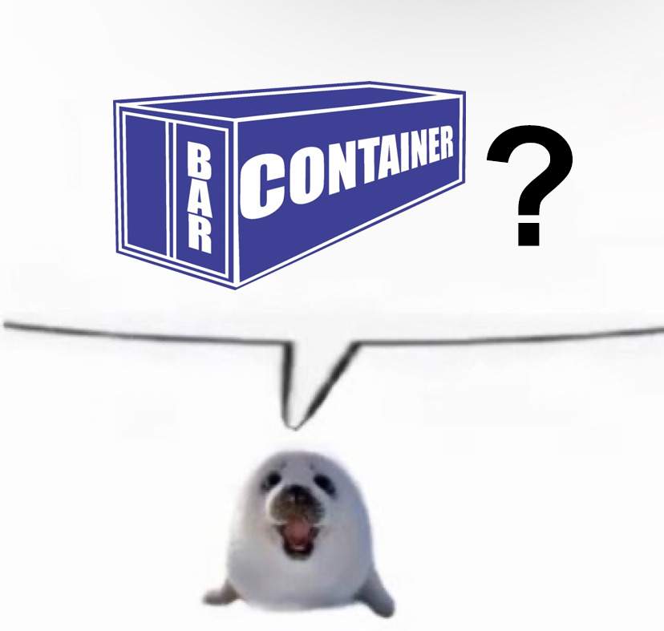
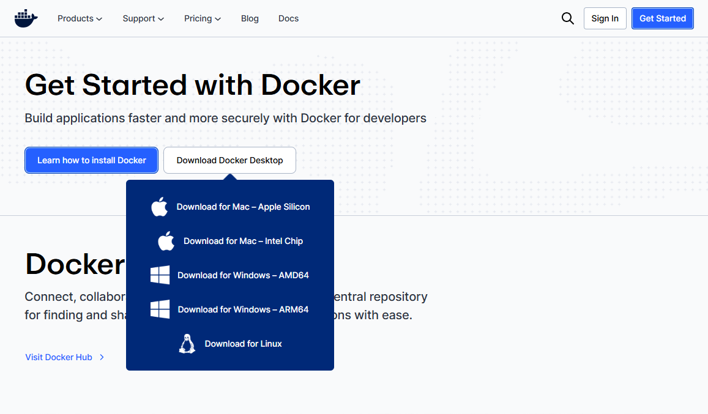
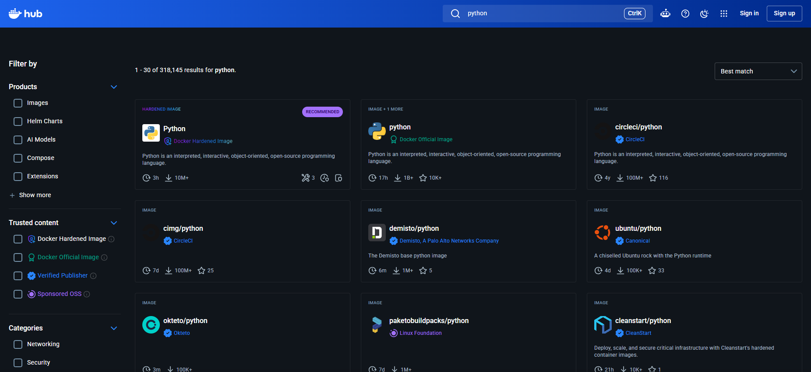

Aula 1 — O que é Docker e por que ele mudou a forma de montar ambientes.
// o que é o PET-SI
$ ./build.sh # bash: comando não encontrado $ sudo apt install libfoo-dev # 'sudo' não é reconhecido... → reinicia no Linux. de novo.
Uma máquina virtual roda um sistema operacional completo dentro do seu — isolado, descartável e replicável.
Configura uma vez, e cada projeto ganha seu próprio ambiente limpo, sem contaminar o resto da máquina. Já é um salto enorme em relação a instalar tudo no mesmo lugar.
VMs resolvem tudo?
VMs resolvem tudo?
Cada aplicação empilha um Guest OS completo sobre o Hypervisor.
É esse sistema operacional duplicado, três vezes, que torna tudo lento e faminto por recursos.
SOs simultâneos num PC comum
Ao chegar na 3ª VM, é bem provável que o computador comece a travar — puro consumo de recursos.
E se o seu PC já é daqueles de “fecha o Chrome pra abrir o VS Code”… nem uma você roda em paz.

O Docker não roda VMs, cada uma com seu próprio SO. Ele roda containers que compartilham o mesmo kernel.
O kernel Linux vive no Docker Engine e é “emprestado” a todos os containers. Sem SO duplicado, eles ficam muito mais leves, rápidos no boot e versáteis.
Megabytes em vez de gigabytes. Você roda dezenas no mesmo PC sem o ventilador implorar por socorro.
Não há um sistema operacional inteiro para inicializar — o container sobe quase instantaneamente.
O mesmo container roda igual no seu PC, no do colega e no servidor. Acabou o “na minha máquina funciona”.
No Windows, o Docker Engine precisa de um kernel Linux — e ele roda numa VM chamada WSL 2.
“Mas você não disse que VM é pesada?” Sim — só que a Microsoft otimizou o WSL 2 ao extremo: enxuto, com boot quase instantâneo e integrado ao Windows.
> wsl --status Versão padrão: 2 Kernel: 5.15.x-microsoft # detalhes virão numa próxima aula

Os botões do Docker Desktop são auto-explicativos — depois que você entende o que eles fazem.
A meta aqui é entender o funcionamento por trás da coisa. Por isso começamos pela linha de comando, sem atalhos. Quando voltarmos à interface gráfica, cada botão vai fazer sentido.
Um pacote imutável e somente-leitura com tudo que a aplicação precisa para rodar. Um snapshot pronto para distribuir.
Uma instância viva de uma imagem. Roda, escreve, para e some — sem nunca alterar a imagem que o originou.
Pense em classe e objeto: uma imagem (classe) gera quantos containers (objetos) você quiser.
# imagem <nome>:<tag> $ docker pull nginx:1.27-alpine $ docker pull nginx:1.31-trixie-perl $ docker pull postgres:latest
A tag identifica a versão ou variante da imagem.
Mesmo nome, tags diferentes — versões diferentes, variantes enxutas (alpine), builds específicas. Fixar a tag deixa o ambiente previsível.
# a mesma imagem, várias tags $ docker tag meuapp:1.0 meuapp:latest # vários containers, a mesma imagem $ docker run -d -p 8080:80 nginx:1.27 $ docker run -d -p 8081:80 nginx:1.27
O repositório público e oficial de onde você baixa imagens prontas.

Revisadas, documentadas e auditadas pela própria Docker. O ponto de partida mais seguro — nginx, postgres, node.
Publicada diretamente pelo fornecedor do software, com identidade verificada pela Docker — ex.: Microsoft, Bitnami, Redis Labs.
Sem shell, sem pacotes desnecessários, usuário não-root por padrão. Superfície de ataque mínima — voltada para ambientes críticos.
Como o Docker é open-source e qualquer imagem pode ter seu Dockerfile rastreado, não ter um desses selos não significa ser inseguro — significa apenas que não passou pelo processo de certificação formal. Projetos ativos e transparentes como supabase publicam imagens confiáveis sem selo oficial. Avalie o repositório, o histórico e a comunidade por trás.
Próxima aula → comandos docker na prática: exercícios com containers e imagens.